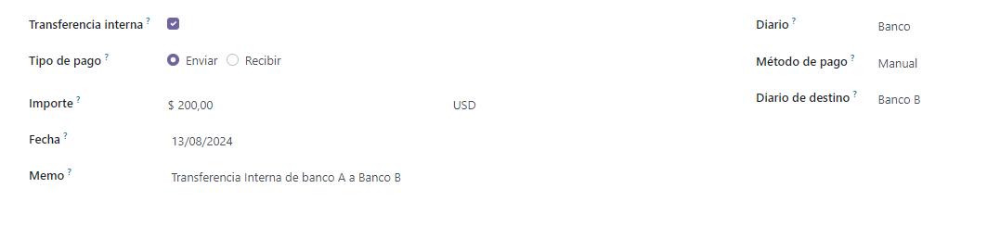
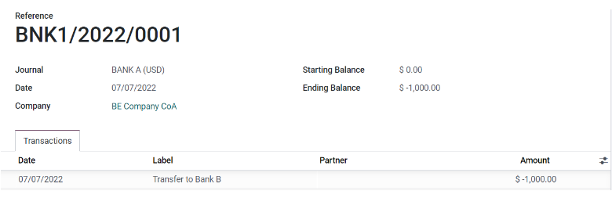

Internal transfers¶
In Odoo, internal money transfers can be made in a few clicks. You need at least either two bank accounts, two cash journals, or one bank account and one cash journal.
Configuration¶
An internal transfer account is automatically created on your database based on your company’s localization and depending on your country’s legislation. If needed, the default Internal transfer account can be modified by going to and then under the Default Accounts section.
Note
At least two bank accounts are needed to make internal transfers. Refer to Bank and cash accounts section to see how to add an additional bank account to your database.
Register an internal transfer from one bank to another¶
Let’s say you have two bank accounts registered on your database and you want to transfer 1,000 USD from Bank A to Bank B.
Log an internal transfer¶
From the Accounting Dashboard, click on the drop-down selection button (⋮) on one of your banks. In the New column click on Internal Transfer and enter the information related to the transfer.
Note
Fill in the Memo field for automatic reconciliation.
Save and Confirm to register your internal transfer. The money is now booked in the transfer account and another payment is automatically created in the destination journal (Bank B).
Bank journal (Bank A)¶
Account |
Debit |
Credit |
|---|---|---|
Outstanding Payments account |
$1,000 |
|
Internal transfer account |
$1,000 |
Automated booking - Bank journal (BANK B)¶
Account |
Debit |
Credit |
|---|---|---|
Outstanding Receipts account |
$1,000 |
|
Internal transfer account |
$1,000 |
Note
There are one outstanding payment and one outstanding receipt pending in your two bank account journals, because the bank statement confirming the sending and receiving of the money has not been booked yet.
Manage and reconcile bank statements¶
The next step is to book the bank statements to finalize the transaction by creating, importing, or synchronizing your Transactions lines. Fill in the Ending balance and click on the Reconcile button.
See also
In the next window, choose counterparts for the payment - in this example, the outstanding payment account - then click Validate.

Bank journal entry¶
Account |
Debit |
Credit |
|---|---|---|
Outstanding Payment |
$1,000 |
|
Bank Account (BANK A) |
$1,000 |
The same steps must be repeated once you receive the bank statement related to Bank B. Book and reconcile your bank statement lines.
Bank journal entry¶
Account |
Debit |
Credit |
|---|---|---|
Outstanding Receipt |
$1,000 |
|
Bank Account (BANK B) |
$1,000 |